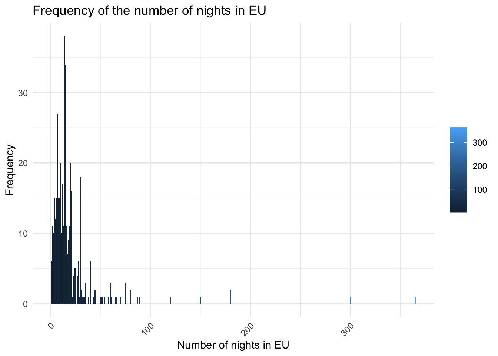

Code
source(here::here("scripts", "setup.R"))
data <- read.csv(here("data", "TMS_dataset_Vaud_20240314_FINAL.csv"),
sep = ",")Where are from the people coming in the canton of Vaud? What kind of trip are they doing?
source(here::here("scripts", "setup.R"))
data <- read.csv(here("data", "TMS_dataset_Vaud_20240314_FINAL.csv"),
sep = ",")### F05_01.ENG ###
#nb of occurrences by country and continents
OccurencesCountry <- data %>%
group_by(data$F05_02.ENG) %>%
count(sort = TRUE)
OccurencesContinent <- data %>%
group_by(data$F05_01_ENG) %>%
count(sort = TRUE)
#list all countries and continents
# print(unique(data$F05_02.ENG))
# print(unique(data$F05_01_ENG))
#Continent in percentages
F05_01_PCT <- data %>%
group_by(F05_01_ENG) %>%
summarise(Count = n()) %>%
mutate(Percentage = Count / sum(Count) * 100) %>%
arrange(desc(Percentage))
# Countries in percentages
F05_02_PCT <- data %>%
group_by(F05_02.ENG) %>%
summarise(Count = n()) %>%
mutate(Percentage = Count / sum(Count) * 100) %>%
arrange(desc(Percentage))
datatable(F05_01_PCT, options = list(pageLength = 5,
class = "hover",
searchHighlight = TRUE), rownames = FALSE) datatable(OccurencesCountry, options = list(pageLength = 10,
class = "hover",
searchHighlight = TRUE), rownames = FALSE)#add continent next to each country
#or merge continent and country table. 1st column continents, 2nd countries, # of occurences then percentage
#plot numbers continent
ggplot(F05_01_PCT, aes(x=reorder(F05_01_ENG, Percentage), y=Percentage, fill=F05_01_ENG)) +
geom_bar(stat="identity") +
theme_minimal() +
labs(x="Continents", y="Percentage", title="Percentage of Each Unique Continent") +
theme(legend.title = element_blank(), # Remove the legend title
legend.position = "none", # Hide the legend as the colors are not necessary with labels
plot.title = element_text(hjust = 0.5), # Center the plot title
axis.text.x = element_text(angle = 45, hjust = 1)) + # Rotate x-axis labels for readability
geom_text(aes(label=sprintf("%.2f%%", Percentage)), position=position_dodge(width=0.9), vjust=-0.25) # Add percentage labels
### F05_02.ENG ###
#plot with continents
F05_02_PCT <- data %>%
group_by(F05_02.ENG, F05_01_ENG) %>% # Group by both country and continent
summarise(Count = n(), .groups = 'drop') %>%
mutate(Percentage = Count / sum(Count) * 100) %>%
arrange(desc(Percentage))
ggplot(F05_02_PCT, aes(x = reorder(`F05_02.ENG`, -Percentage), y = Percentage, fill = `F05_01_ENG`)) +
geom_bar(stat = "identity") +
coord_flip() + # Make the plot horizontal
scale_fill_brewer(palette = "Set3", name = "Continent") + # Use a color palette for continents
theme_minimal() +
labs(x = "Country", y = "Percentage", title = "Percentage of Responses by Country and Continent") +
theme(axis.text.x = element_text(angle = 45, hjust = 1),
plot.title = element_text(hjust = 0.5),
legend.position = "bottom") # Adjust legend position
### F12 & F13 ###
#Are we more interested in knowing when they came for holidays or how long?
#duration per month
data <- data %>%
mutate(
# Convert to date format first
date_column = dmy(F12),
# If you want the month names instead
month_name_column = month(date_column, label = TRUE, abbr = FALSE) # Set abbr=FALSE for full month names
)
#order
desired_order <- c("Serial2",
"F05_01",
"F05_01_ENG",
"F05_02",
"F05_02.ENG",
"F05_03",
"F05_04",
"F12",
"F13",
"month_name_column",
"hFerienDauer")
remaining_columns <- setdiff(names(data), desired_order)
new_order <- c(desired_order, remaining_columns)
data <- data[, new_order]
# nb of days per month
nb_days_per_month <- data %>%
select(F12, F13, month_name_column, hFerienDauer) %>%
group_by(month_name_column) %>%
summarize(total_hFerienDauer = sum(hFerienDauer, na.rm = TRUE))
nb_days_per_month <- nb_days_per_month %>%
mutate(season = case_when(
month_name_column %in% c("December", "January", "February") ~ "Winter",
month_name_column %in% c("March", "April", "May") ~ "Spring",
month_name_column %in% c("June", "July", "August") ~ "Summer",
month_name_column %in% c("September", "October", "November") ~ "Fall",
TRUE ~ NA_character_ # for any month names not matched or NA values
))
#plot
ggplot(nb_days_per_month, aes(x = month_name_column, y = total_hFerienDauer, fill = season)) +
geom_bar(stat = "identity") +
geom_smooth(aes(group = 1), method = "loess", se = FALSE, color = "red", linetype = "dashed") +
scale_fill_manual(values = c("Winter" = "blue", "Spring" = "green", "Summer" = "purple", "Fall" = "orange")) +
theme_minimal() +
labs(x = "Months", y = "Sum Holiday Durations", title = "Total Holiday Duration by Month", fill = "Season") +
theme(axis.text.x = element_text(angle = 45, hjust = 1))`geom_smooth()` using formula = 'y ~ x'Warning: The following aesthetics were dropped during statistical transformation: fill.
ℹ This can happen when ggplot fails to infer the correct grouping structure in
the data.
ℹ Did you forget to specify a `group` aesthetic or to convert a numerical
variable into a factor?
### F16 ###
F16_Q <- data %>% count(F16.ENG, name = "total_options")
F16_Q$percentage <- with(F16_Q, total_options / sum(total_options) * 100)
labels <- paste(F16_Q$F16.ENG, sprintf("%.1f%%", F16_Q$percentage))
# Create a pie chart
pie(F16_Q$total_options, labels = labels, main = "Distribution of F16.ENG Options")
### F20 ###
# Careful here: some people have 0 nightstay and only passed by switzerland for a day.
# but answered the question 16, asking about the number of nights.
# also when f16 answered and F20 blanc, drop observations?
F20_freq <- data %>%
group_by(F20) %>%
summarize(Count = n(), .groups = 'drop') %>%
arrange(desc(Count)) # Optional: arrange in descending order of frequency
ggplot(F20_freq, aes(x = F20, y = Count, fill = F20)) +
geom_bar(stat = "identity") +
theme_minimal() +
labs(x = "Number of nights", y = "Frequency", title = "Frequency of the number of nights in Switzerland") +
theme(axis.text.x = element_text(angle = 45, hjust = 1), # Improve readability of x-axis labels
legend.title = element_blank()) # Hide the legend if not neededWarning: Removed 1 row containing missing values or values outside the scale range
(`geom_bar()`).
### F21 ###
#consider NA as 0 here.
F21_EU_locations <- data %>%
group_by(F21) %>%
summarize(Count = n(), .groups = 'drop') %>%
arrange(desc(Count)) # Optional: arrange in descending order of frequency
ggplot(F21_EU_locations, aes(x = F21, y = Count, fill = F21)) +
geom_bar(stat = "identity") +
theme_minimal() +
labs(x = "Number of nights in EU", y = "Frequency", title = "Frequency of the number of nights in EU") +
theme(axis.text.x = element_text(angle = 45, hjust = 1), # Improve readability of x-axis labels
legend.title = element_blank()) # Hide the legend if not neededWarning: Removed 1 row containing missing values or values outside the scale range
(`geom_bar()`).
### F30 ###
F30_Q <- data %>% count(F30.ENG, name = "Total")
F30_Q$percentage <- with(F30_Q, Total / sum(Total) * 100)
ggplot(F30_Q, aes(x = F30.ENG, y = Total, label = paste(percentage, "%"))) +
geom_bar(stat = "identity", fill = "skyblue") +
geom_text(vjust = -0.5, color = "black") +
theme_minimal() +
labs(title = "Q30: Have you booked a package tour?",
x = "Answers",
y = "Total")### Deeper reasoning ###
# Where are coming from the people, per month
# Summarize data: count arrivals per month and country
monthly_arrivals <- data %>%
group_by(month_name_column, F05_02.ENG) %>%
summarise(Count = n(), .groups = 'drop') %>%
arrange(month_name_column, F05_02.ENG) # This will ensure the data is ordered, which might help in visualization
# Visualize
ggplot(monthly_arrivals, aes(x = month_name_column, y = `F05_02.ENG`, size = Count)) +
geom_point(alpha = 0.7) + # Using alpha for better visibility if points overlap
theme_minimal() +
labs(title = "Monthly Arrivals in Switzerland by Country of Origin",
x = "Month",
y = "Country of Origin",
size = "Number of Arrivals") +
theme(axis.text.x = element_text(angle = 45, hjust = 1))